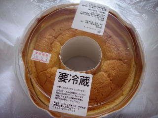
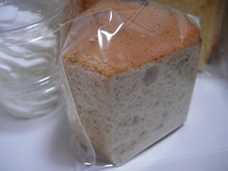
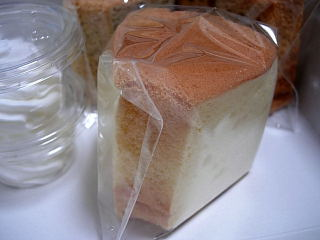

シフォンでシフォンケーキ1ホール買いました。
2010/05/30
シフォンのメール会員になっているので、シフォンから宣伝のメールがきました。
5/30はシフォンケーキ1ホール600円って内容でした。
これはお買い得！って事で買いに行きました。
1ホールでケーキ買ったのって久々です。

ちょっと甘めのシフォンケーキをいっぱい食べれて満足満足でした。
メール届くようにしてて良かったです。
島根県出雲市大津町264-3
2010/05/30
シフォンのメール会員になっているので、シフォンから宣伝のメールがきました。
5/30はシフォンケーキ1ホール600円って内容でした。
これはお買い得！って事で買いに行きました。
1ホールでケーキ買ったのって久々です。

ちょっと甘めのシフォンケーキをいっぱい食べれて満足満足でした。
メール届くようにしてて良かったです。
2009/12/19
お引越ししたケーキ屋さんのシフォンに行きました。
ケーキが冷凍ケーキになってました。最近はおとりよせなんかで冷凍ケーキを食べる機会があるので、そんなに抵抗ないですね。実際食べた感じ、そんなに違和感はなかったです。
焼いもシフォンです。

ちょっとずつ食べるとほんのりさつま芋味がしました。沢山頬張ると焼き芋味でした。以前よりシフォンケーキのふんわり感がUPしましたね。
米粉シフォンです。

こっちはちょっとキメが細かく、弾力感がありました。以前のシフォンのケーキはこんな感じだった気がしました。
2009/12/02
新聞の折込チラシに、ケーキ屋さんのシフォンがありました。
移転オープンしたそうです。
住所が出雲市大津町264-3です。
普段通らない場所なのでよくわからないですが、近いうちに行きたいと思います。
2008/12/30
シフォンのケーキ
2008/1/26
シフォンのみかんシフォン
2008/1/3
シフォンの抹茶ロール
2007/11/2
シフォンのりんごタルト
2007/3/29
シフォンのココアシフォンと抹茶ろーる
2007/1/11
シフォンのモンブランと柚シフォン
2006/3/31
シフォンのプリン
2006/3/25
シフォンのバナナタルト
2005/7/19
シフォンのチーズケーキとプリン
2005/5/2
シフォンのチーズタルト